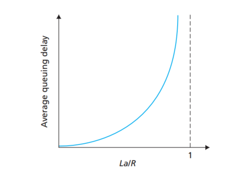
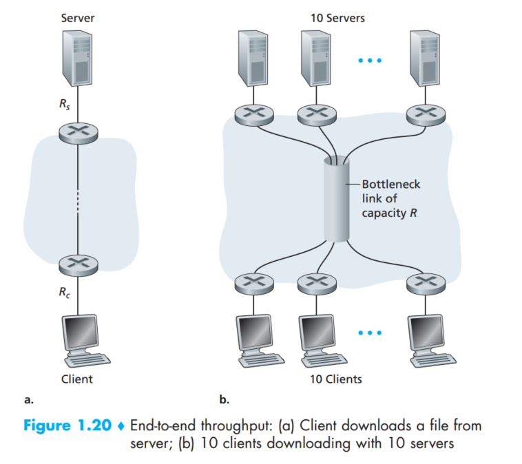
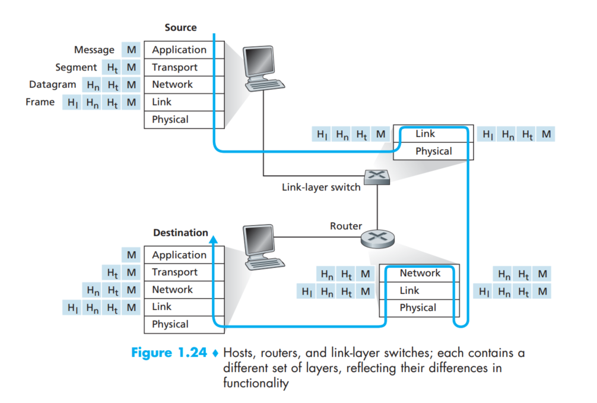

计算机网络 自顶向下方法(原书第6版)
第一章
1.3 packet switching(分组交换) and circuit switching(电路交换)
特点： 电路交换：在通话的全部时间内，通话的两个用户始终占用端到端的通信资源，此时线路的传输效率很低。 分组交换：不需要建立整个连接，以packet为单位灵活发送，对通信链路是逐段占用。
1.4 延时，损失，吞吐量
延时由四部分组成，processing, queuing, transmission, propagation组成，一般而言，processing的延时比较少，可以忽略不计。
- processing 里面主要是确定某个host的请求格式是否有效，然后根据地址确定发送给哪个接下来的router。
- queuing 是由于router可能先前的请求还没有结束，这个时间取决于线路的繁忙程度
- transmission 这个时间定义为 L/R 其中L代表这个包的长度，R代表传输速率，比如R = 100Mbps之类的
- propagation 这个延时定义为 d/s 其中d代表distance， s代表speed， 一般而言s比光速慢一点

对于queuing delay,需要注意的是，La/R < 1，其中L是每个包的bit数，a是每秒中包的个数，R是路由传输数据的速率，可想而知，如果此数值大于1，那么queuing delay将会增加到无穷大，另外，随着该值的增加，queuing delay呈指数增加。
就损失而言，因为一个router不可能有无限大的queue，所以当host向一个已经满的router发送一个包的时候，这个包就被丢弃掉了，所以当我们考虑一个节点性能的时候，不仅要考虑delay，还要考虑loss的情况。
对于吞吐量而言，一般router之间的速率很快，所以速度只取决于server到第一个router和，最后的router到client的速率最小值。对于更现实的多个client连接多个server而言，如果R远大于Rs和Rc的话，依然公式不变，如果R比较小的话，那就是R/N了。(图中N是10)

1.5 协议层
+---Protocol---+
| Application |
| Transport |
| Network |
| (Link) |
| Physical |
+--------------+
应用层：如HTTP，FTP等 数据单元称为报文(message)。 传输层：TCP，UDP, 负责向两台主机中进程之间的通信提供通用的数据传输服务。 网络层：在TCP/IP体系中，网络层使用IP协议 数据链路层：帧格式 物理层：比特，确定插头电缆连接等。
相比于OSI七层协议，缺少了 presentation layer 和 session layer，前者包括数据压缩描述等，后者包括数据交换的同步与界定。
一个非常直观的描述图，描述PC，交换机，路由器各自工作的layer。

1.6 当网络受到攻击
途径: malware, DoS攻击，DDoS攻击，packet sniffer, ip欺骗，
DoS攻击：Vulnerability attack, Bandwidth flooding, connection flooding。 DDoS：分布式的Dos,多个源。